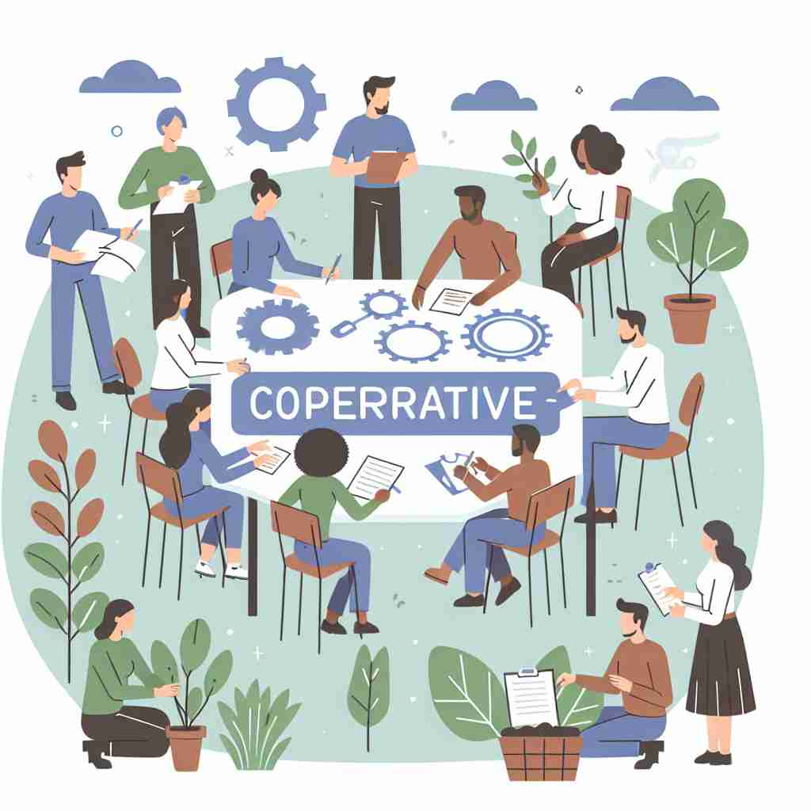

💬 The cooperative team worked together to complete the project. 合作团队齐心协力完成了这个项目。

💬 The group showed amazing cooperative teamwork while working on their project. 该小组在项目中展现了令人惊叹的合作团队精神。
💬 The cooperative team worked together to complete the project. 合作团队齐心协力完成了这个项目。
💬 The group showed amazing cooperative teamwork while working on their project. 该小组在项目中展现了令人惊叹的合作团队精神。
🧠 记忆'cooperative'时，想象人们携手合作的场景。无论是形容词描述行为，还是名词指代组织，都源于'共同工作'这一核心概念。这种合作精神贯穿了所有含义，使得不同用法之间存在紧密联系，有助于全面理解和记忆这个词。
🔈 [kəʊ'ɒpərətɪv]
🗝️ adj. willing to work with others towards a shared goal 愿意与他人合作共同实现目标
🎭 在一个学校的科学小组项目中，学生们围坐在一起策划他们的实验。每个人都积极贡献想法，互相倾听，并快速达成一致，展示出一种强烈的团队合作精神。这表明了'cooperative'作为形容词，表示乐于与他人协作以实现共同目标的含义。
💬 The team members were very cooperative and completed the project on time. 团队成员非常配合，按时完成了项目。
🌳 由前缀 'co-'（共同）加上词根 'oper'（工作）和形容词后缀 '-ative' 组成，表示 '合作的'。
💡 记忆 'cooperative' 可以联想到 '共同操作'，将合作视为与他人一起工作的过程，从而更容易记住其含义。
🗝️ adj. involving mutual assistance in working towards a common goal 涉及相互协助朝着共同目标努力
🎭 想象一个社区花园项目，居民们聚在一起种植植物。他们分工明确，有人负责整理土地，有人负责浇水，还有人负责设计。大家互相帮助，旨在创造一个美丽的社区空间，这种合作象征着'cooperative'在提供互助来实现共同目标时的含义。
💬 The two companies formed a cooperative partnership to develop new technologies. 两家公司建立了合作伙伴关系，以开发新技术。
🤔 扩展核心含义到描述行为或系统
🗝️ n. an organization owned and run jointly by its members, who share the profits or benefits 一个由成员共同拥有和运营的组织，成员共享利润或利益。
🎭 在一个小镇上，有一家名为'绿色市场'的食品合作社。该合作社由当地农民共同拥有，每个人都参与管理和决策。收益按比例分配给所有成员，维持了'cooperative'作为名词，表示由成员共同拥有和经营的组织之含义。
💬 Many farmers in the region sell their produce through a local cooperative. 该地区的许多农民通过一个地方合作社出售他们的农产品。
🤔 核心理念应用于具体的组织形式
🗝️ n. a farm, business, or other organization that is owned and run jointly by its members 一个由其成员共同拥有和经营的农场、企业或其他组织。
🎭 在一个风景如画的乡村里，有一个名为'阳光农场'的农场。这个农场由一群农民共同拥有，每位成员都参与日常经营和管理，分享劳动成果。这体现了'cooperative'所指的由其成员共同拥有并经营的农场或企业的概念。
💬 The housing cooperative allows residents to have a say in how their building is managed. 住房合作社允许居民参与管理他们楼栋的方式。
🤔 核心概念具体化为特定类型的组织